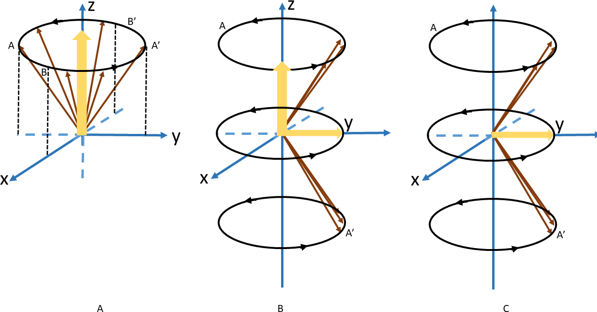
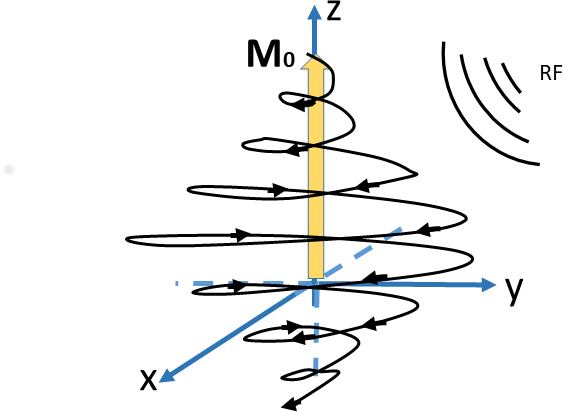
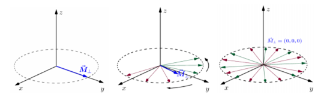

Manual Electrónico de RM
3. FENÓMENO DE RESONANCIA MAGNÉTICA NUCLEAR (NMR)
En los primeros días, los escáneres eran el dominio de los físicos e ingenieros que los inventaron y construyeron, y la técnica se llamó imágenes de RMN (resonancia magnética nuclear). La técnica realmente despegó clínicamente cuando se eliminó la 'palabra con N'. Esto era sensato, ya que el término "nuclear", aunque científicamente preciso, implicaba una conexión con la energía nuclear y, en el último de los años de la guerra fría, resonó en la mente del público con el espectro de las armas nucleares.
Sabemos hasta ahora, que la frecuencia es posible calcularla con la ecuación de Larmor, esa es la adecuada para aplicar el pulso de RF. Y sólo cuando éste y los protones tienen la misma frecuencia, se podrán acoplar estas ondas, captando así los protones a la onda de radio, produciendo el fenómeno de resonancia.
3.1 PULSOS DE RADIOFRECUENCIA
Los pulsos de rediofrecuencia (RF) son generados por una bobina del transmisor que rodea la totalidad o una parte del cuerpo, generalmente se construye junto con el imán. Para obtener imágenes de la cabeza o las extremidades, a veces se usan bobinas transmisoras más pequeñas.
Posteriormente, cuando ocurre el fenómeno de resonancia, es porque los protones dentro del paciente subieron a otro nivel de energía, modificando así, la magnetización del paciente. Esto pasa cuando los protones precesados logran sincronizarse con el pulso de RF, produciendo así que los protones apuntando hacia cada lado de forma aleatoria, se vayan cancelando y sólo sobrevivan las fuerzas magnéticas que, están “en fase”, como si los protones precesaran a pasos, apuntando hacia la misma dirección al mismo tiempo, sumándose. Como resultado, se disminuye la magnetización longitudinal (a lo largo del eje z) y se obtiene un vector magnético en dirección a los protones de precesión (apuntando sobre el plano x-y), es por eso que se llama “magnetización transversal”. Sin embargo, como son señales muy débiles e interferidos eléctricamente desde fuentes externas a la sala de MRI, logrando minimizarlas con un blindaje especial llamado “Jaula de Faraday”, que se completa sólo cuando la puerta de la sala está cerrada.
Las bobinas o arreglos existentes en la actualidad, que mejoran las imágenes por homogeneizar las bobinas sobre las regiones anatómicas de interés, estos son:
- de cabeza
- de cuerpo completo
- de cordón espinal
- de cuello
- de rodilla
- de muñeca
- de hombro
- de pecho
- de cavidades endocavitarias (próstata y endovaginal)
- vascular periférica
- flexibles
- articulación temporomandibular
Pero estas deben ser manejadas con mucho cuidado, pues son más sensibles por ser móviles.

(a) Campo magnético externo fuerte sin RF.
(b) Impulso de RF causa una nueva magnetización transversal mientras que la magnetización longitudinal disminuye.
(c) Magnetización longitudinal puede desaparecer dependiendo del pulso de RF.
NOTAS
-Al establecerse ese vector de magnetización transversal, está moviéndose en fase con los protones de precesión, por lo que el vector magnético al estar en constante movimiento, estará induciendo una corriente eléctrica. Este fenómeno se da en las antenas, como es el caso de las ondas de radio, y es lo que nos ayuda a general las señales en MRI.
-El movimiento del vector magnético transversal consiste en dirigirse hacia la antena y alejarse de ella una y otra vez, con la misma frecuencia de precesión. Y, por lo tanto, la señal obtenida de MR de igual manera, tendrá la frecuencia de precesión.
3.2 EXCITACIÓN
La excitación ocurre como consecuencia del fenómeno de resonancia, modificando así los niveles de energía y las fases de giro. Se hace por medio de ondas de radio, que son ondas electromagnéticas en una frecuencia específica y se mandan durante un periodo muy corto de tiempo, denominado pulso de radiofrecuencia (RF). Estos pulsos de RF llegan a alterar a los protones que están en precesión alineándose con el campo magnético externo, cuando están en la frecuencia adecuada para intercambiar energía. Para esto debe tener la misma frecuencia; la misma "velocidad" que los protones, pues va a provocar un cambio en el estado de energía y la fase de los giros, dependiendo de la intensidad, forma de la onda y lo que dure el tiempo de RF.
El resultado de este intercambio de energía es que hay un brinco hacia el estado de energía mayor, yendo del estado paralelo al antiparalelo, que, viéndolo gráficamente como vectores, veríamos que hay un cambio en la magnetización neta, proyectándose sobre el plano XY al momento de recibir el pulso RF. El ángulo de inclinación está en función de la fuerza y la duración del pulso de RF electromagnético.
Veremos que, durante la excitación, la componente del vector de magnetización neta en el plano longitudinal disminuirá notablemente, incluso hasta llegar a apuntar hacia abajo, mientras que aumentará en el plano transversal. Esto debido a que en el plano transversal se está alcanzando una coherencia de fase, mientras que, en el plano longitudinal, es por la diferencia de estado del número de espínes.
La energía de RF se absorbe.
Un observador vería la espiral M0 hacia el plano XY (o incluso hacia el eje -Z).
Y veremos que se liberará energía electromagnética, al regresar el sistema del estado de desequilibrio, al del equilibrio.
3.3 TIEMPOS DE RELAJACIÓN
Las ecuaciones clásicas del movimiento del momento magnético han sido útiles para demostrar la respuesta de un protón aislado en un campo magnético, pero no es todo lo implicado en la respuesta, pues también se ven afectados tanto por los spines del protón están interactuando siempre con los átomos vecinos, como por el intercambio de energía con los alrededores. Además, la frecuencia de Larmor está directamente afectada por los campos magnéticos locales. Por ahora, utilizaremos la siguiente notación:
$${M_{II} = M_{z}}$$ y $${\vec{M_{\bot}} = {M_{x}x} + {M_{y} \hat{y}}}$$
El retorno al equilibrio de la magnetización neta se llama “Relajación”. Durante la relajación, hay una retransmisión de energía electromagnética, que es la emisión de RF, que se llama “Señal de MRI”. Esta relajación tiene dos componentes, la relajación longitudinal, que corresponde a la recuperación de la magnetización en el eje z; y la segunda es la relajación transversal, que corresponde a la desintegración de la magnetización en el plano x-y.
El tiempo de recuperación T1 o relajación longitudinal es el que representa el intercambio de energía entre los espines y la red circundante (relajación espín-red). Esto se debe a que, los núcleos de la red tienen un movimiento violento de rotación y vibración, por pasar de espín de alta energía a una baja, modificando el campo alrededor de cada núcleo magnético y aumentando la temperatura. Posteriormente, cuando hay una transición de un estado de baja a alta energía, la energía de RF se liberará nuevamente en la red circundante. La tasa de recuperación de la magnetización longitudinal se caracteriza por la constante de tiempo específica de tejido T1, la cual representa el tiempo de recuperación de la magnetización en ese plano, que llega hasta un 63% de su valor final, puesto que el equilibrio de mi sistema es cuando tengo la magnetización neta apuntando hacia el eje Z, debido al campo magnético B0. Hay largos valores de T1 cuando son mayores las intensidades del campo.
Por otro lado, el tiempo de recuperación T2 o relajación transversal representa a los giros que salen de la fase, puesto que a medida que los giros juntos suceden, los campos magnéticos, tanto el externo aplicado como los campos vecinos, están interactuando (interacción espín-espín), generando un pequeño cambio en su velocidad de precesión. Es importante saber que este tipo de interacciones son temporales y aleatorias, por lo que se genera una pérdida de la coherencia de fase entre los núcleos que giran perpendicularmente al campo magnético principal. Además, la magnetización transversal describe una curva exponencial, caracterizada por una constante de tiempo T2, que es el tiempo en el que la magnetización transversal ha perdido un 63% de su valor original, puesto que van reduciéndose sus componentes en este plano X-Y. Este T2, de igual manera, es específico de cada tejido, siendo siempre es más corto que T1. Sin embargo, los valores de T2 no están relacionados con la intensidad del campo.
IMAGEN 4 : Esquema del comportamiento en el tiempo de la componente transversal de la magnetización.
3.4 ECUACIONES DE BLOCH
Recordemos la relación que existe entre la magnetización global y el momento magnético del núcleo:
$$\cfrac{d\tilde{\mu}}{dt} = \gamma\mu \times \vec{B_0}$$
y cuando:
$$\vec{M} = \Sigma \mu i ...$$
$$\cfrac{d\vec{M}}{dt} = \gamma^{\vec{M}\times\vec{B}_0}$$
Si, y sólo si, se cumplen las condiciones de equilibrio térmico, en las que las componentes de la magnetización en el plano transversal (x, y) son nulas:
$$M_x = 0$$
$$M_y = 0$$
$$M_z = M_0$$
Donde tenemos un máximo valor lineal de Mz cuando no está en equilibrio térmico:
- Tiempo de relajación longitudinal T1
- Tiempo de relajación transversal T2
$$\cfrac{dMz}{dt} = \cfrac{M_0 - Mz}{T_1}$$
$$\cfrac{dMx}{dt} = \gamma(\vec{M} \times \vec{B}_0)_x - \cfrac{M_x}{T_2}$$
$$\cfrac{dMy}{dt} = \gamma(\vec{M} \times \vec{B}_0)_y - \cfrac{M_y}{T_2}$$
Y escribiéndola de forma completa dependiente del tiempo tenemos:
$$\cfrac{dMz}{dt} = \gamma^{(\vec{M} \times \vec{B}_0)}z + \cfrac{M_0 - Mz}{T_1}$$
Donde a esas tres ecuaciones se les conoce como “Ecuaciones de Bloch”, que nos describen cómo es la relajación de la magnetización bajo la presencia de un campo externo. Cuando se termina de aplicar el pulso RF, las ecuaciones de Bloch son aquellas que sólo consideran el campo
$$\vec{B}_0 = B_0 \tilde{z}$$
es decir, que resolviendo al oscilador amortiguado con magnetización inicial (M0, 0, 0), obteniendo la solución:
$$M_x = M_0 e^{{-t}/{T_2}} cos(-\omega_0 t)$$
$$M_y = M_0 e^{{-t}/{T_2}} sen(-\omega_0 t)$$
$$Mz = M_0(1 - e^{{-t}/{T_1}} )$$
TIPOS DE IMANES
El diseño en MRI es esencialmente determinado por el tipo y la forma del imán principal del sistema, existen los de tipo cerrado, túnel o abiertos. El imán es básicamente el corazón del sistema. Además, entre más intenso es, el campo magnético generado será mayor; provocando así, una mejor obtención de la señal y disminuyendo el ruido generado. Las unidades con las que se mide el campo, son llamadas “unidades Gauss”, las cuales representan la medida de las líneas generadas por el campo.
Como se busca la uniformidad del campo, dependerá del imán utilizado:
- Imánes permanentes
Capaces de sostener campos de hasta 0.3 T. Compuesto por componentes metálicos ferromagnéticos. Tienen la ventaja de ser barato y fácil de mantener, son muy fuertes, pero son débiles en intensidad.
- Imánes electromagnéticos
- Superconductores
Usados en sistemas de campo medio y alto (0.5 T o más) Estos son los más utilizados y consisten en una bobina que se hace superconductor por helio líquido de refrigeración y sumergidos en nitrógeno líquido. Producir campos magnéticos fuertes y homogéneos, pero son caros y requieren rellenar el tanque de helio.
- Resistivos y electroimanes
Capaces de sostener campos de hasta 0.6 T
Son más baratos y fáciles de mantener que los imanes superconductores, pero son mucho menos potentes, más energía y requieren un sistema de refrigeración.
- Superconductores
Para obtener el más homogéneo campo magnético, el imán debe estar finamente sintonizado ("equilibrado"), o pasivamente, con piezas móviles de metal, o activamente, usando bobinas electromagnéticas pequeñas distribuidas dentro del imán.
QUENCH
En caso de pérdida de superconductividad, la energía eléctrica es disipada como calor. Este calentamiento se debe al “Quench”, que es el término utilizado cuando una sección del cableado regresa a su resistencia normal por cualquier motivo. No es más que la fuga de criogénicos en el interior de los equipos de MRI, ya que el calentamiento provoca una rápida ebullición de helio líquido que se transforma en un muy alto volumen de helio gaseoso. Durante este proceso, el imán deja de ser superconductor: el campo magnético desciende en cuestión de segundos. Si no se controla en cuestión de horas, se produce un calentamiento del criogénico producido en su interior y la propia máquina lo expulsa a través de una chimenea. Es importante tomar en cuenta que los criogénicos también se evaporan de manera natural. Para evitar quemaduras térmicas y/o asfixia, imanes superconductores tienen sistemas de seguridad: gas tuberías de evacuación, control del porcentaje de oxígeno y la temperatura dentro de la habitación de MRI, apertura hacia el exterior de la puerta.
VENTAJAS DE MRI
Se puede juntar con otros métodos de imagen, para poder tomar a la vez, signos vitales, pero es importante que se cheque tanto compatibilidad, como correcta obtención de señales.
DESVENTAJAS DE MRI
- El sonido producido en los sistemas de MRI son debido a los gradientes, que provocan cambios lineales en el campo /(+) o \(-), para invertir la dirección de la corriente.
- Puede haber una interferencia de RF con las señales obtenidas.
- Hay riesgo de quemar al paciente al exponerlo por un tiempo prolongado, o por componentes de sus tatuajes.
BLINDAJE
Debe siempre haber presente un blindaje, tanto en el cuarto, como en el sistema:
- Blindaje pasivo
Envoltura de hierro sobre el imán, para delimitar al campo.
- Blindaje activo
Al centro del imán hay una bobina principal, y lo que hago es agregar más bobinas alrededor, haciendo que se sumen los campos generados.
FRINGE FIELD O CAMPO DE FRANJA
Es la delimitación del campo magnético alrededor del sistema y utiliza para prevenir atracción de objetos metálicos y para que no pueda afectarse las señales obtenidas. Alrededor de los 5G se considera seguro.
GRADIENTES
El término "gradiente" se refiere a un espacio adicional, generando una variación lineal sobre una dirección de la intensidad del campo magnético estático, modificando así al campo magnético principal que es más potente. La intensidad del campo de gradiente se mide en militesla por metro (mTm-1). Esta variación es producida por dos bobinas que se encuentran en cada una de las direcciones. La dirección a la que apunta el campo magnético principal no se modifica, más bien, se suman al campo magnético principal B0, que se siente a lo largo de cada dirección, modificando la frecuencia de precesión, que sigue dándose por la frecuencia de Larmor y afecta también la dispersión de las fases de giro. Además, es homogénea su acción sobre el plano perpendicular a donde se aplica. Normalmente se aplican solo por un corto tiempo como pulsos. Son estos tres conjuntos de gradientes que le dan a MR su capacidad de dimensión tridimensional. Por ejemplo, un 'x gradiente' (Gx) se sumará o restará de la magnitud del campo estático en diferentes puntos a lo largo del eje x.
La imagen 5 representa la acción de los gradientes sobre cada dirección, afectando así las intensidades que resienten cada uno de los espines, dependiendo su posición. Por ejemplo, en el centro (x = 0) el campo total experimentado por los núcleos es simplemente B0, girando así a la frecuencia de Larmor; en cambio, conforme te mueves a lo largo de la dirección x, aumentará o disminuirá linealmente, provocando que los protones resuenen o más lento, o más rápido, dependiendo de su posición; y, conforme se va detectando la precesión, se registrará como mayor o menor frecuencia en la señal MR. Tomando estas diferencias en las frecuencias, es posible distinguir las distintas señales de MRI en distintas posiciones del espacio.

IMAGEN 5- Gradientes en cada una de la direcciones, que componen al sistema de MRI.
SHIMMING
Sabemos bien que el campo magnético producido en el sistema, no es homogéneo, por lo que hay una manera de solucionar este problema por medio de 2 técnicas.
1.
1. Shimming pasivo. Éste se compone de placas metálicas, que te permiten controlar así el campo magnético.
2. Shimming activo. En éste, se logra meter energía al sistema por medio de más bobinas, logrando mejorar y homogeneizar el campo generado por la primera bobina, haciendo así que por una mezcla se señales generadas, se obtenga una casi ideal. Tomando en cuenta que no deben presentarse armónicos, para no interferir entre señales.
En la parte clínica, este proceso del shimming ya está automatizado en el sistema, haciéndolo cada vez que se toma un estudio, pues cuando el sujeto está dentro del sistema, afectará directamente el campo generado en el mismo.
RADIOFRECUENCIA
Este sistema de radiofrecuencia se compone de antenas, que son los únicos componentes que podemos modificar, involucradas en la excitación de los núcleos y sirven únicamente para transmitir y recibir información por medio de ondas de radiofrecuencia. Involucrados en la selección de cortes, la excitación de núcleos, aplicación de los gradientes y la adquisición de señales.
Las bobinas son fundamentales para el sistema de radiofrecuencia, ya que permitirán que la excitación sea uniforme sobre todo el volumen a explorar. Éstas deben tener una baja relación señal a ruido y alta sensibilidad.
Existen varios tipos de antenas para un sistema de Radiofrecuencia:
-
Bobinas emisoras y receptoras "regulares".
Se debe llenar la bobina tanto como sea posible, debería tener un factor de relleno superior al 70%.
El campo magnético oscilante (B1) de la bobina de RF tiene que ser perpendicular al campo magnético principal (B0) generado por el imán para que los espines sean excitados.
La configuración más común es que el campo principal esté orientado a lo largo del eje del imán por lo que la bobina debe producir un campo perpendicular al mismo.
Estas están formadas por espirales de alambre de baja resistencia, generalmente cobre. La geometría de las espirales es muy importante para una excitación adecuada, permitiendo recibir una adecuada detección de la señal.
En este capítulo
- 3.1 Pulsos de Radiofrecuencia
- 3.2 Excitación
- 3.3 Tiempos de relajación
- 3.4 Ecuaciones de Bloch